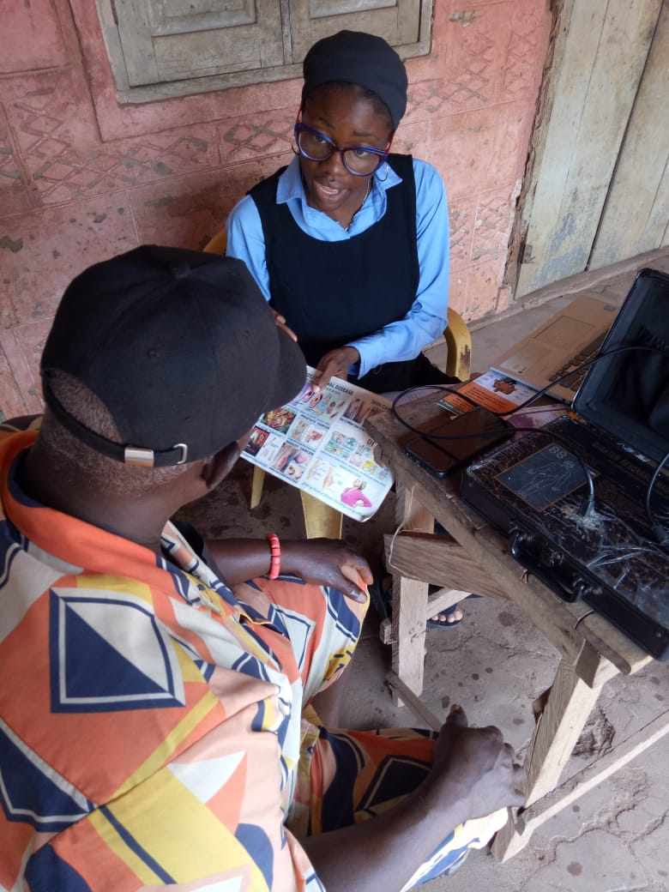
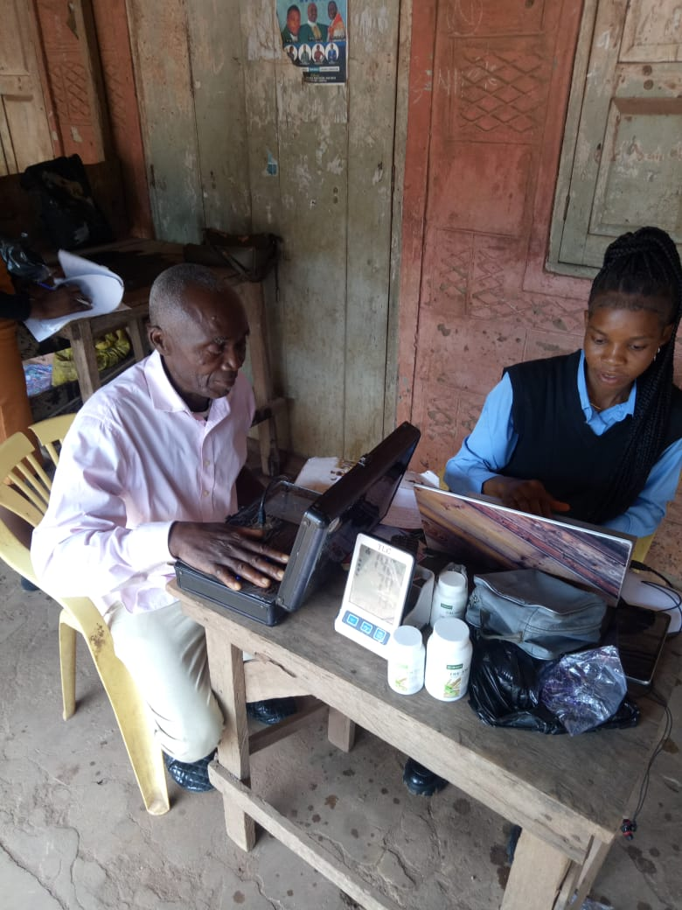
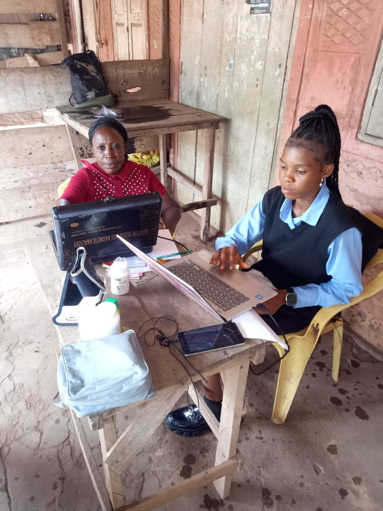

Supporting elderly people, widows and vulnerable communities through healthcare and nutrition.
Donate NowUKO'z Foundation is dedicated to improving lives through healthcare outreach, nutritional education, elderly care and community empowerment.
Free screenings and wellness programs.
Healthy living education and support.
Dignified care for seniors.
Partnering to strengthen communities.


